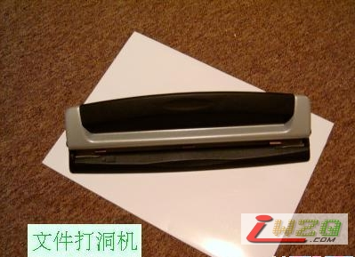

教你自制袖珍磁性五子棋
首页
五子棋缘
#1 教你自制袖珍磁性五子棋 作者：有志青年 发表时间：2007-4-12 18:08:31
转载自：http://www.luopo.com/bbs/read.php?tid=28626
你旅行中、睡前想打谱，是不是经常棋子会担心掉下来？教你自制一副袖珍磁性五子棋，解决您的烦恼。该五子棋小巧、携带方便，让您能随时随地下一把或研究棋谱。

#2 Re:教你自制袖珍磁性五子棋 作者：逆刃 发表时间：2007-4-14 14:54:14
好家伙！亏你也能想到啊！呵呵
#3 Re:教你自制袖珍磁性五子棋 作者：菏香袭幽梦 发表时间：2007-4-29 11:03:30
妙啊！
#4 Re:教你自制袖珍磁性五子棋 作者：青发伊凌寺 发表时间：2007-5-3 17:32:15
我准备做一个,没有知识产权保护吧?
#5 Re:教你自制袖珍磁性五子棋 作者：小丸.net 发表时间：2007-8-3 23:37:48
请问，原料好不好搞。
#6 Re:教你自制袖珍磁性五子棋 作者：思●索○者 发表时间：2007-8-5 14:34:18
好简单,好实用,呵呵